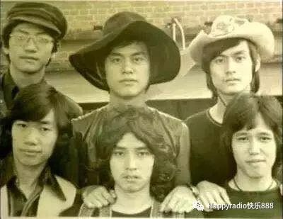

歲月為證Built by Years
每一段歲月，都是一首歌Every year, a song

真實照片：1960年代末Loosers（失敗者）樂隊合影——溫拿前身，少年譚詠麟的音樂起點
寒門逐夢，始於不甘Humble Beginnings, Born of Defiance
年少務工養家，課餘深耕音樂，憑一張撿拾的比賽報名表入行。初組樂隊定名Loosers，以自嘲直面低谷碰壁，在清貧堅持中扎根初心。 Working odd jobs to support his family in his youth, dedicating his spare time to music, he entered the industry on a scavenged competition entry form. His first band was named Loosers—a self-deprecating embrace of setbacks, planting his original resolve in poverty and persistence.
「我不是天才，我只是比別人更肯捱、更肯熬。」"I'm no genius. I just endure more, and grind harder than others."
溫拿歲月，純粹年少The Wynners Years, Pure Youth
1973年溫拿樂隊成型，五人同分酬勞、共赴逐夢，低谷彼此兜底。恪守五年一聚之約，半世紀堅守不渝，純粹情義從未褪色。 The Wynners took shape in 1973—five members splitting earnings equally, chasing dreams together, and catching each other through the lows. Honoring a pact to reunite every five years, a half-century of unwavering devotion, their pure bond never fading.
「溫拿的日子，是我這輩子最乾淨、最沒有功利心的時光。」"The Wynners days were the cleanest, least utilitarian time of my life."

真實影像：溫拿樂隊《朋友》寶麗金20週年演唱會現場Real footage: The Wynners "Friends" live at PolyGram 20th Anniversary Concert (Bilibili)
黃金三專，時代巔峰The Golden Trilogy, Pinnacle of an Era
1984–1986年，《霧之戀》《愛的根源》《愛情陷阱》三張神專問世，定義港樂黃金時代。1985年紅館20場、1989年38場巡演，刷新樂壇紀錄，場場萬人合唱，「校長」之名由此沉澱。 From 1984 to 1986, three landmark albums—"Mist of Love," "Root of Love," and "Love Trap"—defined the golden age of Cantopop. 20 Coliseum shows in 1985, 38 in 1989—shattering industry records, every night a sing-along of tens of thousands. The title "Principal" was forged in those moments.

真實影像：譚詠麟1984年首登紅館演唱會現場Real footage: Alan Tam's first Coliseum concert, 1984 (Bilibili)

真實唱片封面：1986年專輯《第一滴淚》，收錄《無言感激》Real album cover: "First Drop of Tears" (1986), featuring "Silent Gratitude" (Source: QQ Music)
無人復刻的格局A Vision Beyond Replication
1988年，事業鼎盛之際，宣布退出所有競爭性頒獎禮。一曲《無言感激》含淚壓軸，放下名利枷鎖，純粹歸心歌唱。 At the peak of his career in 1988, he announced his withdrawal from all competitive music awards. With "Silent Gratitude" as the tearful closing number, he set down the burden of accolades and returned, pure-hearted, to singing.
「獎項是一時的，歌聲是一輩子的。我不想再和後輩爭輸贏，想把機會留給新人，讓樂壇有更多新聲音。」"Awards are fleeting. Songs last a lifetime. I don't want to compete with the next generation—I want to leave room for new voices, let the industry breathe."
歌聲跨海，扎根山河Voices Crossing Seas, Rooted in the Land
1991年央視春晚，一曲《水中花》唱響全國，讓粵語旋律走入大眾視野。廣州越秀山露天演唱會，以無華舞台、純粹歌聲，定格數萬人共聽金曲的國民經典場面。 At the 1991 CCTV Spring Festival Gala, "Flower in Water" resonated across the nation, bringing Cantonese melodies into the mainstream. At the Yuexiu Hill open-air concert in Guangzhou, with an unadorned stage and pure vocals, he captured a national moment—tens of thousands sharing in the golden classics.

真實影像：《水中花》（粵）原版MVReal footage: "Flower in Water" original MV (Bilibili)
樂壇封頂，榮譽加冕The Pinnacle, Crowned in Honor
深耕樂壇數十載，斬獲香港樂壇最高榮譽金針獎。褪去所有競賽浮華，以終身作品與行業底蘊，坐穩港樂殿堂級席位。 After decades of dedication to the music industry, he received the Golden Needle Award—Hong Kong's highest musical honor. Stripped of all competitive glamour, his lifetime body of work and industry standing secured his place in the Cantopop hall of fame.

真實影像：1996年第19屆十大中文金曲頒獎禮，譚詠麟獲金針獎Real footage: Alan Tam receives the Golden Needle Award at the 19th Top Ten Chinese Gold Songs Awards, 1996 (Bilibili)
左麟右李，薪火巔峰Alan & Hacken, Passing the Torch
與後輩正式組建「左麟右李」組合，開啟跨時代樂壇搭檔新模式。首場連開12場，加場續演、場場爆滿，百場巡演橫掃海內外，成為港樂傳承最成功的範本。 Partnering with junior artist Hacken Lee, they formed the "Alan & Hacken" duo, pioneering a new model of cross-generational musical partnership. 12 consecutive shows from the start, with added dates and sold-out nights—a hundred-date tour spanning the globe, becoming the most successful template for Cantopop's legacy.
「港樂不是一個人的盛世，是一代代人的接力。」"Cantopop isn't one person's golden age—it's a relay across generations."

真實影像：左麟右李演唱會2003全場 Real footage: Alan & Hacken Live 2003 full concert (Bilibili)

真實海報：左麟右李十周年演唱會·香港有聲音，2013 Real poster: "Alan & Hacken" 10th Anniversary Concert, 2013 (Source: Bilibili)
十載同行，經典續章A Decade Together, Classic Continued
左麟右李組合十週年，紅館連開13場紀念演唱會。十年雙向成全、彼此成就，用舞台紀實港樂的生生不息。 The 10th anniversary of Alan & Hacken—13 consecutive commemorative shows at the Coliseum. Ten years of mutual fulfillment and shared achievement, using the stage to document Cantopop's enduring vitality.
真實影像：左麟右李十週年演唱會2013《香港有聲音》Real footage: Alan & Hacken 10th Anniversary Concert 2013 "Hong Kong Has a Voice" (Bilibili)

真實照片：2010年紅館「再度感動」演唱會現場Real photo: "Moved Again" concert live at the Coliseum, 2010 (Source: Bilibili)
持續深耕，老歌新生Sustained Dedication, Old Songs Reborn
持續出新專輯、開巡迴演出，改編翻新經典金曲。不困守年代濾鏡，主動適配新時代聽眾，讓老歌持續擁有新生命力。 Continuing to release new albums and mount tours, reimagining and refreshing classic hits. Refusing to be trapped by nostalgia filters, actively adapting to new generations of listeners, giving old songs renewed life.

真實照片：譚詠麟2024年9月上海虹口足球場演唱會現場Real photo: Alan Tam live at Shanghai Hongkou Football Stadium, September 2024 (Source: Bilibili)
堅守舞台，熱愛至終Holding the Stage, Devotion to the End
褪去流量熱度，依舊保持常態化巡演、音樂創作。以高齡堅守舞台初心，每場演出全程傾力、零敷衍。用半生踐行諾言：只要身體允許，歌聲便永不落幕。 Beyond the metrics of trending traffic, maintaining regular touring and creative output. Holding fast to the stage's original calling well into his seventies, pouring everything into every performance—zero shortcuts. Fulfilling a half-lifetime promise: as long as his health allows, the songs will never end.